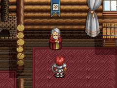
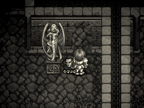

目次 > ゲームについて > 日本Falcom 攻略 > Ys > 攻略チャート > 廃坑まで
らんの眼
Ys(イース) Ys Eternal(VE)/Ys Complete
| 概要 | 情報 | ボス戦 |
| 敵キャラ一覧 | アイテム一覧 | 攻略チャート |
| 地図 | ダウンロード | イースの本 |
| 経験値表 | 地名一覧 | タイムアタック |
| ETERNAL / Complete 比較 | キャラクター一覧 | |
| Ys 攻略へ | 目次へ戻る |
| [ ～サルモン神殿 ] [ ～廃坑 ] [ ～ダームの塔 ] [ ～ダームの塔14 階 ] [ ～エンディング ] |
| フィーナ救出まで |
| サルモン神殿へ行き、金色に輝く女神像に触れてワープする 「神殿の鍵」を使い、扉を開きジェノクレス戦 サルモン神殿 地下1 階を通過 サルモン神殿 地下2 階の宝箱から「宝箱の鍵」、「牢屋の鍵」、「銀の鈴」を入手 サルモン神殿 地下 1階の牢屋を開け、フィーナに会い「彼女を連れて脱出する」を選択 フィーナの横にある宝箱から「マスク オブ アイズ」を入手 ゼピック村までフィーナの護衛をする ジェバとのイベント |
| (サブイベント) 「宝箱の鍵」を入手後は、サルモン神殿 地下1 階にある「ネックレス」、サルモン神殿 1階にある「ルビー」、「RING MAIL」が入手できる 同様に、草原の「紙切れ」が入手できる |
| ラスティン廃坑へ行く前まで |
| ゼピック村の村長の家へ行き、「銀の鈴」を返し、お礼に「POWER RING」をもらう  サルモン神殿 地下3 階へ移動し、「象牙の鍵」、「SILVER SHIELD」を入手 「マスク オブ アイズ」を装着し、サルモン神殿 地下3 階にある隠された通路を抜けて「大理石の鍵」を入手  サルモン神殿 地下3 階の床に水が張られた部屋へ移動 「象牙の鍵」、「大理石の鍵」を使い扉を開き、ニグティルガー戦 奥の部屋で「イースの本」を入手 ミネアの町へ移動し、占い師サラの家へ行く 占い師サラの家にいる老人に話しかけ、「イースの本」を入手 ラスティン廃坑へ移動する |
| (サブイベント) ミネアの町の「オマーンの酒場」にいる青年に話しかけてから、バルバドの港町の「自衛団の詰所」にいるスラフに話しかけると、「TALWARL」をもらえる サルモン神殿にある「イースの本」を入手後、ジェバの家に行くと、元気になったフィーナを見ることができる |
| [ ～サルモン神殿 ] [ ～廃坑 ] [ ～ダームの塔 ] [ ～ダームの塔14 階 ] [ ～エンディング ] |
| 概要 | 情報 | ボス戦 |
| 敵キャラ一覧 | アイテム一覧 | 攻略チャート |
| 地図 | ダウンロード | イースの本 |
| 経験値表 | 地名一覧 | タイムアタック |
| ETERNAL / Complete 比較 | キャラクター一覧 | |
| ページ上部へ | Ys 攻略へ | 目次へ戻る |